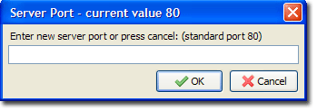
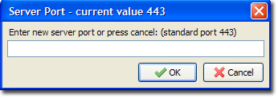
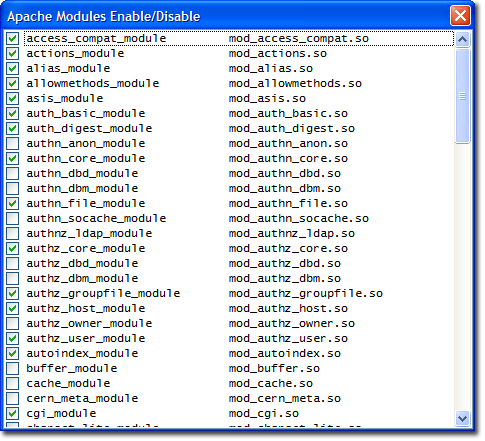
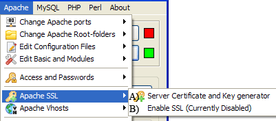
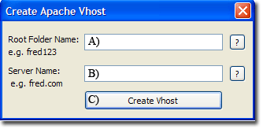
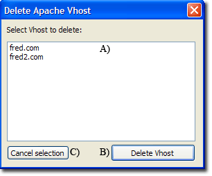

|
|
Apache |
Apache HTTP Server is an open-source web server platform. It is one of the main components of The Uniform Server. Apache has been pre-configured to run as a local web server. There are several configuration options allowing the server to be accessed from an Intranet or the Internet. The Uniform Server Zero provides an easy-to-use control interface, UniController, allowing you to run servers as a standard program. UniController contains a menu specifically targeting Apache. From this menu you can put your server on-line, change ports or create a server certificate. This page covers all the menu options.
Change Apache ports
The Change Apache ports menu allows you to specify the Apache standard and secure ports. Two sub-menus Change Apache port and Change Apache SSL port are provided to set the standard and secure ports respectively:
Change Apache port
Apache > Change Apache ports > Change Apache port
|
 |
Change Apache SSL port
Apache > Change Apache ports > Change Apache SSL port
|
 |
Note: For new port to become effective, you must restart the servers.
General Notes:
The Uniform Server Zero sets port environment variables AP_PORT and AP_SSL_PORT and updates the user configuration file user_configuration.bat. Environment variables are used in the following Apache configuration files.
Apache standard port ${AP_PORT}
- UniServerZ\core\apache2\conf\httpd.conf
- UniServerZ\core\apache2\conf\extra\httpd-vhosts.conf
Apache ssl port ${AP_SSL_PORT}
- UniServerZ\core\apache2\conf\extra\ssl.conf
Change Apache Root-folders
All public pages are served from a root folder; Uniform Server Zero default is folder UniServerZ\www (also known as htdocs in a Unix environment). This root folder is the main server's root folder. Vhosts have their own unique root folder, not covered here.
The Uniform Server has a predefined folder (ssl root folder) that is reserved for https access. Secure pages are pages served from this root folder.
Apache menu Change Apache Root-folders provides two sub-menus (Select new server Root-Folder (www) and Select new server Root-Folder (ssl)) for assigning a new folder to the main root folder and secure root folder respectively.
Select new server Root-Folder (www)
Apache > Change Apache Root-folders > Select new server Root-Folder (www)
- Opens Browse for Folder dialog window. The current root folder is highlighted.
- Navigate to required new root folder. Note: For a portable server, ensure the root folder is below the main folder UniServerZ.
- Highlight the required folder by clicking on it.
- Click OK button. A confirmation pop-up is displayed.
Select new server Root-Folder (ssl)
Apache > Change Apache Root-folders > Select new server Root-Folder (ssl)
- Opens Browse for Folder dialog window. The current root folder is highlighted.
- Navigate to required new root folder. Note: For a portable server, ensure the root folder is below the main folder UniServerZ.
- Highlight the required folder by clicking on it.
- Click OK button. A confirmation pop-up is displayed.
Note 1: For a new root folder to become effective, you must restart the servers.
Note 2: The root path of a selected folder is internally stored either in an absolute or relative format.
For full menu details, see Document root paths (Absolute vs Relative).
Edit Configuration Files
Edit httpd.conf
Apache > Edit Configuration Files > Edit httpd.conf
Opens the configuration file in Notepad, allowing you to directly edit the file.
File: UniServerZ\core\apache2\conf\httpd.conf
Edit httpd-ssl.conf
Apache > Edit Configuration Files > Edit httpd-ssl.conf
Opens the configuration file in Notepad, allowing you to directly edit the file.
File: UniServerZ\core\apache2\conf\extra\httpd-ssl.conf
Edit Basic and Modules
Edit Basic Configuration
This menu allows you to change commonly configured Apache options.
Note: for full menu details, see Apache basic configuration page.
Apache Modules Enable/Disable
|
This menu allows you to enable or disable Apache Modules. Note: Improper use can totally disable your server! Be sure you know what a module does before you enable or disable it. Apache > Edit Basic and Modules > Apache Modules Enable/Disable
Note: After changing state, you must restart the Apache server for the new configuration to be recognized. This modifies the file UniServerZ\core\apache2\conf\httpd.conf |
 |
Access and Passwords
How to put the servers on-line for public or intranet access and optionally restrict access using a name and password is covered in details on the following pages:
Note: Both menu options require a .htaccess file in the root folder. If this file does not exist, user is informed accordingly and given the option to create one.
Apache SSL
Secure Sockets Layer (SSL) offers privacy for client-server communication. SSL establishes an encrypted tunnel using cryptography algorithms and keys, through which other protocols such as HTTP are transported.
By default, The Uniform Server Zero installation has SSL disabled for security reason. A certificate/key pair is required and must be unique to the particular server. After creating a new server certificate/key pair, SSL is automatically enabled in Apache's configuration file.
Server Certificate and Key generator
Apache > Apache SSL > Server Certificate and Key generator
Creating a Server Certificate and Key has been split and covered in detail on the following three pages:
Enable SSL
Apache > Apache SSL > Enable SSL (Currently Disabled)
|
After creating a self-signed certificate, SSL is automatically enabled. However, for testing, you may wish to temporally disable ssl. This sub-menu allows you to toggle ssl on and off.
After changing state, the Apache server must be restarted. |
 |
Apache Vhosts
The Uniform Server Zero is configured for name-based virtual hosting. This allows you to run any number of websites from a single IP address.
Create Apache Vhost
This sub-menu allows you to quickly create a virtual host.
Apache > Apache Vhosts > Create Apache Vhost
Creating a Vhost requires only two form entries: a server root folder and a host name. If the root folder does not exist, clicking the Create Vhost button creates it in the main vhosts folder UniServerZ\vhosts. A Vhost section is created in the Vhost configuration file (httpd-vhosts.conf), an entry is written in UniServer's PAC file and an IP address domain name pair is written to the Windows hosts file if this option is enabled. .htaccess and favicon.ico files are created in the new root folder. Here is a summary of the steps:
Note: For new configuration to be recognized, you must restart your Apache server. |
 |
|
Note: Internet access |
Locate these lines: Order Deny,Allow Deny from all Allow from 127.0.0.1 Allow from ::1 |
Comment out the lines as shown: #Order Deny,Allow #Deny from all #Allow from 127.0.0.1 #Allow from ::1 |
Delete Apache Vhost
|
This sub-menu allows you to quickly delete a virtual host. Apache > Apache Vhosts > Delete Apache Vhost
Note: Deleting a Vhost does not delete its root folder; this requires user confirmation. A pop-up is displayed informing user the Vhost was deleted and to confirm if the root folder should be deleted. |
 |
Note 1: Deleting a Vhost removes its corresponding entry in UniServer's PAC file and PC hosts file.
Note 2: For detailed information, see Apache Vhosts
Apache server Info - Status
These sub-menu options provide convenient shortcuts that allow you to view the server status and other important information. They are shown along with a small extract of each file. Each menu option redirects your browser to the appropriate page. You can also type this address directly into your browser.
|
Apache server-info: Apache > Apache server Info - Status > Apache server information Menu item URL: http://localhost/server-info |
Server Settings Server Version: Apache/x.x.x (Win32) OpenSSL/x.x.x Apache Lounge VSXX Server built: (...) Server loaded APR Version: x.x.x Compiled with APR Version: x.x.x Server loaded APU Version: x.x.x Compiled with APU Version: x.x.x Server loaded PCRE Version: (...) Compiled with PCRE Version: (...) Module Magic Number: (...) Hostname/port: localhost:80 Timeouts: connection: 60 keep-alive: 5 MPM Name: WinNT MPM Information: Max Daemons: 64 Threaded: yes Forked: no Server Architecture: 32-bit |
|
|
Apache server-status: Apache > Apache server Info - Status > Apache server status Menu item URL: http://localhost/server-status |
Apache Server Status for localhost (via ::1) Server Version: Apache/x.x.x (Win32) OpenSSL/x.x.x Server MPM: WinNT Apache Lounge VSXX Server built: (...) Current Time: (...) Restart Time: (...) Parent Server Config. Generation: 1 Parent Server MPM Generation: 0 Server uptime: 1 day 3 hours 51 minutes 33 seconds Server load: -1.00 -1.00 -1.00 Total accesses: 2172 - Total Traffic: 16.4 MB - Total Duration: 129510 .0217 requests/sec - 171 B/second - 7.7 kB/request - 59.6271 ms/request 1 requests currently being processed, 149 idle workers |
Apache Logs
The following sub-menu options provide convenient shortcuts allowing you to view server log files. If you are experiencing problems with the server, these should be your first port of call; they may shed light on a particular issue.
Below are the paths to each log file along with a small extract:
|
View Apache Error Log: Apache > Apache Logs > View Apache Error Log Location:UniServer\core\apache2\logs\error.log |
(...) [mpm_winnt:notice] [pid 9228:tid 432] AH00455: (...) [mpm_winnt:notice] [pid 9228:tid 432] AH00456: (...) [core:notice] [pid 9228:tid 432] AH00094: Command line: (...) [mpm_winnt:notice] [pid 9228:tid 432] AH00418: Parent: (...) [mpm_winnt:notice] [pid 14096:tid 400] AH00354: Child: |
|
|
View Apache Access Log: Apache > Apache Logs > View Apache Access Log Location:UniServer\core\apache2\logs\access.log |
::1 - - (...) "GET /us_splash/index.php HTTP/1.1" 200 1509 "-" ::1 - - (...) "GET /index.php HTTP/1.1" 200 1164 "-" |
|
|
View Apache SSL Error Log: Apache > Apache Logs > View Apache SSL Error Log Location:UniServer\core\apache2\logs\error_ssl.log |
|
|
|
View Apache SSL Access Log: Apache > Apache Logs > View Apache SSL Access Log Location:UniServer\core\apache2\logs\access_ssl.log |
::1 - - (...) "GET / HTTP/1.1" 200 1180 ::1 - - (...) "GET /css/style.css HTTP/1.1" 200 735 ::1 - - (...) "GET /images/logo.png HTTP/1.1" 200 28212 ::1 - - (...) "GET /images/padlock.gif HTTP/1.1" 200 1029 ::1 - - (...) "GET /images/branding_bg.png HTTP/1.1" 200 2889 ::1 - - (...) "GET /favicon.ico HTTP/1.1" 200 584 |
Delete above logs:
This sub-menu allows you to quickly delete the above log files.
Apache > Apache Logs > Delete above logs
Note: An alternative to Delete above logs is to use Clean-up delete logs. You can add additional files and folder content to delete.
Apache Syntax Check -t
The Apache Syntax Check menu button initiates a syntax check on Apache's configuration files.
Apache > Apache Syntax Check -t
The results are displayed in a pop-up message box. Any errors found require correction before the Apache server will start.
The check is equivalent to the following manual procedure:
- Start Server Console - Opens a command window
- In the console window, type: httpd_z.exe -t
Note: If you previously changed the Apache binary name, use this name instead of httpd_z.exe in step 2.
Start-up pages
This menu option enables or disables displaying of two predefined pages at Apache start-up.
Sub-menu option Display pageN at start-up toggles between displaying and not displaying pre-selected page at start-up
Sub-menu option Select pageN to display opens a file selection menu allowing you to select (redefine) a page to display.
|
Display page1 at start-up Apache > Start-up pages > Display page1 at start-up This toggle sub-menu enables or disables page1 display at Apache server start-up. Check marker indicates option selected and display page at start-up. |
Select page1 to display Apache > Start-up pages > Select page1 to display This sub-menu item opens a file select dialog. Select a web-page to display at Apache server start-up.
|
|
|
Display page2 at start-up Apache > Start-up pages > Display page2 at start-up This toggle sub-menu enables or disables page2 display at Apache server start-up. Check marker indicates option selected and display page at start-up. |
Select page2 to display Apache > Start-up pages > Select page2 to display This sub-menu item opens a file select dialog. Select a web-page to display at Apache server start-up.
|
Note: If not already running, the default browser is automatically started and an enabled page is displayed.
Alternatively, if portable browser's module is installed and not already running, it is automatically started and an enabled page is displayed.